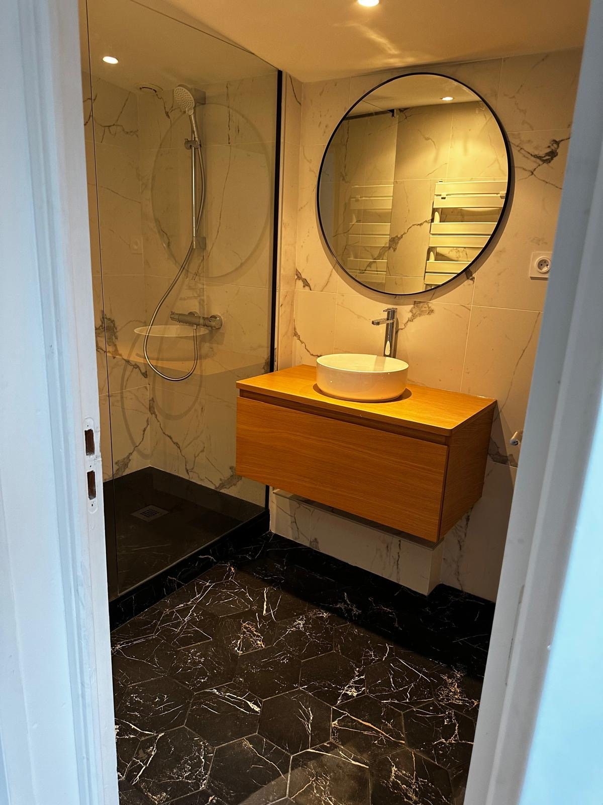

Rénovation Sol et Mur
Donnez une nouvelle vie à vos sols et vos murs grâce à notre savoir-faire. Que ce soit pour un carrelage, un parquet ou un mur abîmé, nous transformons votre intérieur avec des finitions modernes et durables. Voici un exemple de transformation chez un de nos clients.
Avant
Après
Rénovation Terrasse
Une terrasse bien rénovée, c’est un nouvel espace de vie en plein air. Nous remettons à neuf vos sols extérieurs pour un rendu à la fois esthétique et fonctionnel, parfait pour les beaux jours.
Avant
Après
Rénovation Générale
Vous souhaitez refaire une pièce complète ou réaménager tout votre intérieur ? Nous intervenons sur tous types de chantiers pour vous offrir un espace rénové, moderne, et confortable.
Avant
Après
Avant

Après